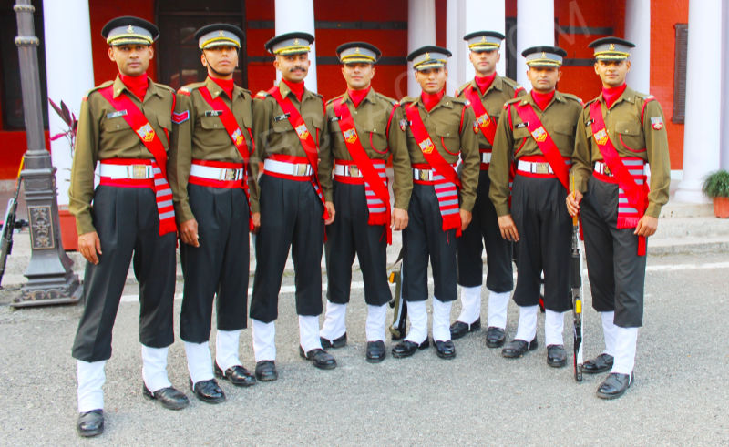
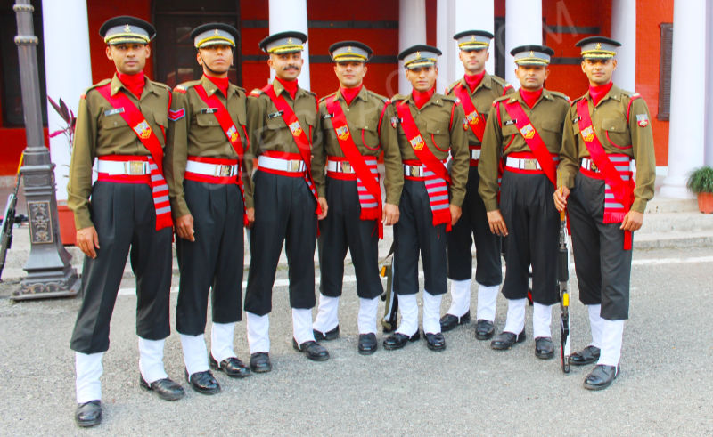

Candidates who join through SSC Tech get Short Service Commission on probation in rank of Lieutenant.
In short service commission, you join Indian Army as a commissioned officer for an initial period of 10 years and extendable by 4 years.
At the end of 10 years, officers get the option to continue to serve in Army. If they are eligible and suitable in all respects then, they are considered for grant of permanent commission.However if they are not selected for permanent commission but are otherwise fit and suitable, then they can continue in SSC for total period of 14 years.
Indian Army SSC Tech 2022 61th Men and 32th Women Notification
Aspirants can check Indian Army SSC Tech 2022 61th Men and 32th Women notification 2022 PDF below.
In order to be eligible for Short Service Commission Technical entry, candidates must fulfill following criteria.
Nationality: You should be any one of the following.
Citizen of India
Subject of Bhutan
Subject of Nepal
Tibetan refugee who came to India before
1-Jan-1962
PIO migrated from Pakistan, Burma, Sri Lanka,
East African countries of Kenya, Uganda, United Republic of Tanzania, Zambia,
Malawi, Zaire, Ethiopia, Vietnam
Age limit:
Age limit for Indian Army SSC Tech
SSC (T) 61 Men
SSCW (T) 32 Women
Age
20 to 27 years old
35 years
Date of birth should lie between
As per cut off date
As per cut off date
Educational Qualification
You should have either passed engineering degree or are in final year of engineering degree.Those who are studying in final year of engineering degree should be able to submit proof of passing by cut off date and give engineering degree certificate within 12 weeks from date of start of training.
Indian Army SSC Tech 2022 Online Form
All eligible and interested candidates have to fill Indian Army SSC Tech 59 online form.
In SSC Tech 59 apply online, one has to convert CGPA / Grades to marks as per the formula adopted by the university.
No changes can be made in online form after submitting it.
.jpg) 
